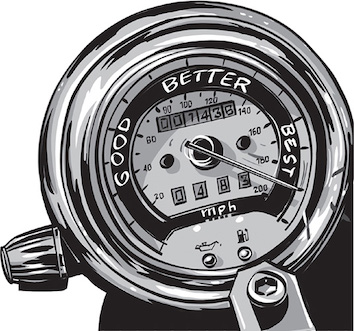
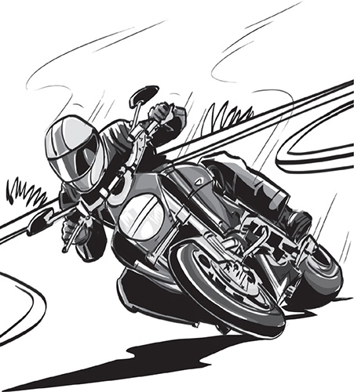

替自己換檔

替自己換檔
更好的你，更充實的生活
如何讓你的生活更上一層樓。
Delatorro McNeal II 是位非典型的勵志演說家。他演講時會帶著摩托車登上舞台，摩托車對他而言不僅僅是一個工具，還是一個強大的精神象徵。摩托車改變他的人生觀，透過摩托車比喻人生，讓他了解如何應對挑戰、實現個人和職業成長，以及成就目標和夢想。
你是否覺得人生失去控制、深陷泥沼或跌落低潮？你是否希望自己能成長得更快，走得更遠，想從生活中獲得更多經驗，那跟著本文節奏，準備換到更高檔的人生！
在這些篇文章中，你會了解
-
• 漸進式的改變和跳躍式改變的差別
-
• 你的人生需要哪些夥伴
-
• 如何引導生活朝著你想要的方向發展

1. 朝著正確的方向面對生活——過去成就了現在，而未來在你面前。
想像一下，你準備騎摩托車去兜風，你戴上安全帽，拉上夾克的拉鍊，跨上摩托車。你準備好要上路了——但有一個小問題：你發現後輪在你前面，龍頭在你身後，你坐反了！當然，理論上這不可能發生。即使你從未騎過摩托車，你也知道身體應該面向前頭，但我們許多人實際上的生活卻是反坐在摩托車上。
大多數摩托車都是後輪驅動的。引擎的動力傳遞到後輪——旋轉後輪使摩托車前進。同時，前輪配合你操控的方向轉動。如果我們將摩托車視為比喻生活的代表，那麼後輪就是你的過去：從以前的經驗中學到的技能、知識和教訓，利用這些從過去獲得的禮物，你現在可以繼續向前邁進。
但是我們要去哪裡？讓我們看看摩托車的另一端：前輪，這是你對未來的願景——為你生活的目標和夢想指明方向。不幸的是，我們許多人深陷於過往忽視了未來。我們將“曾經的美好時光”理想化，感嘆自己最佳的年華已經過去，或者我們責怪於我們過去的錯誤、失敗和缺點，抱怨沒有“正確的時機”不然早已取得成功的人生。
無論哪種方式，我們最終都會將自己困在過去的視野、自我受限的心態和信念中。停滯在過去，無法實現我們想要的未來。如何解決？
轉身向前展望，專注於你面前的未來，讓未來的願景成為引導你的方向，把你的過往留在你的身後，讓它推動你向前進。
2.重建認知和信念戰勝你的藉口和恐懼。
當然，要拋開過往、自我限制的信念，轉換成向前的動力、自我賦權的心態，說起來容易做起來難。實際上要怎麼做？
一種簡單但有效的策略：練習認知重構，以積極的方式重新塑造消極的想法。假設你認為自己太老了，無法重新開始新的事業，你可以通過提醒自己擁有豐富的職涯經驗來重新構建這種想法，重新構建也能使你比年輕人更明智地開展新的職業生涯。
像“我太老了”“我沒有錢”這樣的想法實際上只是藉口，它只是來辯證我們不追求夢想的理由。但是，我們為什麼會熱衷於在還沒開始之前阻止自己呢？答案歸結為一個詞：恐懼。它的解藥是：信心。
追求個人或職業目標本質上是一種有風險的努力，如果你想要一段浪漫的愛情，你可能會被拒絕；如果你嘗試創業，你可能會失敗。我們許多人都害怕失敗和拒絕，我們總是想儘辦法避免它——比逃避更好的方法呢？從在事情還沒開始前就放棄似乎像是更安全的選項，下意識認為只要不開始，就不會失敗，所以我們為恐懼尋找藉口。
我們很容易就落入這種恐懼開始的陷阱了，但好消息是：只有兩種恐懼在生物學中是與生俱來——害怕跌倒和害怕噪音。其餘的恐懼是被生活經驗和我們周遭的社會編譯進我們的腦中，這代表我們可以透過反編譯來抵抗恐懼。
另一個認知重構可能有用的想法，你因為害怕銀行賬戶裡只有 500 美元而無法成功？提醒自己你腦子裡有一個百萬元的商業想法！但要讓這個想法發揮作用，你不能只是對著自己說，你需要相信它。
你必須對自己的想法有信心，就像你對自己的才能、夥伴以及所有其他成功所依賴的人、事和物一樣。
3.做出穩定微小的改變來改善你的生活。
假設你是一個雄心勃勃的人想要實現一些目標——專案、升職、創業、投資、健身等等，你想盡快完成這些目標，因此，你似乎需要在生活中做出重大且迅速的改變才能成功，但是看看那些通過劇烈飲食變化來減肥的人，他們通常會失敗，因為這種大規模、劇烈的變化很少能長久持續。一開始人們可能會堅持個幾天或幾週，隨後他們會疲倦、放棄又故態復萌恢復原本的樣子。
做出微小但穩定的改變可以避免這種常犯的錯誤，你可以通過小範圍的嘗試慢慢改變你的習慣和行為，而不是試圖一次性跳到一個全新的水平，與其想在一夜之間變到100%，不如每天試著在這件事上進步1%。
想像一下，每天進步1%在理財、與同事合作、健身、了解目標受眾或照顧孩子方面，聽起來很容易管理，日復一日地始終如一地這樣做。
起初，它看起來並沒有差很多，但隨著時間的推移，你會產生重大轉變。
4.不要過著停滯、放空或倒退的生活。
即使你從未騎過摩托車，你可能也熟悉汽車檔位的基本概念，在配備自動變速箱的汽車中，我們可以在四個檔位之間切換分別是停車檔、空檔、倒車檔和前進檔。
我們許多人生活在前三個檔位之中，有一些人在空擋的道路上滑行——通過純粹的慣性以同樣的方式做同樣的事情；有一些人將車停在路邊切換成停車檔 - 完全放棄並陷入停頓；而另一些人則陷入了逆境——無止境地重演過去，重複過往形成的行為模式，仍然因為不曾癒合的舊傷感到痛苦。任何停留在這三個檔位中都是沒效率的和不健康的人生，是時候擺脫它們了。
當你停留在空擋狀態時，你就會錯過其他多種生活，比如你的職業、商業、財務、家庭、健康或整體幸福感，結果，你只能完成和享受你能力的一小部分，這不是幸福或成功的方式；當你活在停車檔狀態時，你實際上是在萎縮自己的人生，如果你的汽車或摩托車過久的停在同一個地方，零件會因缺乏使用而開始損壞：電池耗盡，輪胎失去壓力等等，類似的事情也會發生在我們的身體和思想上，如果我們沒有充分使用它，它會分崩離析。
最後，當你陷入往日的生活時，你正在做一些毫無意義的事情，過去已過去，你無法改變它，所以繼續停留在過往是沒有用的，當然，你應該從中學習和成長，但最終，你必須持續前進。
如果你正在處理困擾你好幾年的個人問題，那可能需要大量的治療，可能是有人，以某種形式傷害了你，或是自己，因為犯了某種錯誤，而責怪自己，通常這需要原諒的力量。
尋找並練習自我保護、寬恕或治療，將它轉為動力以擺脫逆境。
5.將情緒轉為動力。
你見過摩托車倒車嗎？可能沒有——因為大多數摩托車沒有倒檔。如果你想倒退，你必須手動完成。
摩托車只“知道”如何前進，你踢起側柱，轉動引擎，然後加速，從那時起，你處於某種“動力”底下——當你加速時，你會進入越來越高的檔速。
準備好不再像汽車停在停車、倒車或空檔一樣生活了嗎？準備好開始像一台摩托車始終在前行嗎？準備好在你的生活中踩油門，加速你的引擎了嗎？那準備好另一個比喻，因為現在是時候看看引擎了——趨動你的東西。
當你生活在動力中，你朝著自己的目標前進，培養你的人際關係，成長為一個大人，並努力在所有領域中進行改進，這種狀態伴隨著一系列積極的情緒，你會感到精力充沛、專注、高效、堅強和自信，這些情緒是一個好的副作用，他們為你提供更多的動力，因為在生命的摩托車上，你的情緒是隱喻的引擎。
用更科學的語言來說，你的情緒是你大腦中的電化學信號，它試圖告訴你一些訊息，例如，如果你感到不安，這代表生活中出現了問題，為了克服不安的情緒，你必須解決導致不安的問題。任何情緒，即使是消極的情緒，都是一個潛在有用的信號，只要正確的解讀並明智地回應，它可以提供你一些指導，負面情緒是不可避免的，我們可以健康的感受它，接受他的存在。
但是我們有些人將負面情緒默認成日常的情緒狀態，無論我們的生活中發生了什麼，我們找到感到憤怒、怨恨、恐懼或其他的負面情緒，如果這聽起來很像你的話，問問自己，說出你通常最容易被吸引的五種情緒，你更願意被哪五種情緒所吸引？你可以做出什麼樣的轉變來開始感受到更多其他情緒？
不斷尋找它們，不斷感受它們，這些情緒最終將成為你新的默認值。
6.看待事物的現實面和理想面，努力將理想的潛力轉化為現實。
再次想像你騎著摩托車，這一次，你坐在正確的方向，並且知道所有關於換檔和引擎的知識，現在你真的準備好上路了，對吧？但還有一個小問題：天氣又又濕又冷還下雨，這是不是你想像中的田園牧歌般的旅程。
假如你坐在汽車上的話，這種天氣沒什麼大不了的，車體保護你免受環境影響，但是坐在摩托車上，你會暴露在各種天氣狀況中——雨、雪、灰塵、風、熱暑、冷冬等等，想騎摩托車，你必須考慮到你的環境並相應地駕駛。
生活也是如此，你必須接受事物原本的面目並順其自然，即使它們還有很多不足之處，但這並不意味著你什麼都不做——恰恰相反！積極思考和樂觀還是很有價值，但如果你盲目樂觀的看待一切，那可能會自我限制，如果不承認自己有問題，就無法解決問題。例如，如果你想解決信用卡的債務，你必須冷靜地審視你的財務狀況，分解花費看看你的錢去哪兒了，而不是假裝一切都很好。
但問題遠不止眼前所見，所有事情皆有兩面：現實的狀態和理想的狀態。你必須看到事物隱藏在表面下的潛力，例如你可能會希望自己沒有購買的糟糕房地產，但在事情的表面之下，有一棟正等待翻修的房子，將成為一項有價值的房地產投資。
不要只看到表面問題，想像理想的房子、更好的人際關係、最佳的績效、財務狀況、心理健康、職業發展或者任何你想要改善的東西，然後改進它，不要只是想像變化並希望它自己神奇地實現，不要只是抱怨你希望事情變得更好，行動起來，無論是製定預算、加入健身房會員，還是採取其他有意義且可管理的步驟。
將你的處境朝著你想去的方向轉變。

7.一個人走得快，一群人走得遠。
為了到達你想去的地方，你必須確保你朝著正確的方向前進，如果你是開車，你想左轉只需要輕輕的轉動方向盤，但在摩托車上，需要更大的努力，你想轉彎也必須將身體傾斜到你想轉動的方向，如果你載著其他人你的夥伴也必須一起傾斜，否則，這需要共同努力，你們可能會倒地。
同樣的教訓也適用於實現我們的目標和夢想，將生活轉向我們想去的方向就是通時也需要將我們身體的重量擺放到相同的方向，以及你是否還有一群願意與你同步擺動的夥伴。
在生命的隱喻摩托車上，你身體的重量就是你的時間和精力，如果你想改善生活中的某些事情，則必須在其中投入更多的時間和精力。想要更好的家庭生活？一起安排更多的郊遊；想改善你的健康狀況嗎？多運動；想要建立你的事業？與客戶建立更深層次的關係。
不要只是讓想法在你的腦海中浮現，把它們寫下來，然後深入研究，找到一些可以提供你如何執行的導師，除了導師，這些想法還可以幫助你找到一些夥伴，這些人和你處在相同階段的旅途上，與他們的友誼可以你提供情感上的支持，他們也可以是監督你的夥伴，檢查你的進步，讓你在減肥、寫書、創業或做任何你想做的事情上保持在正軌上。
最後，將你努力的經驗傳承給其他人，那些人可能處於你旅程的早期階段，你可以成為他們的導師，在教導他們的過程中，你自己也將學到許多寶貴的教訓，因為你回顧過去的經歷並將它們提煉成可以傳授給他人的智慧。
將所有人集結一起，你就有了一個團隊，可以幫助你朝著你夢想的方向前進。
你生命是生命的駕駛員，但你不必獨自前行！
總結
把你的生活想像成一輛摩托車，確保你以正確的方式坐在它上面——面朝前方，過去在你的身後，未來的願景在你面前。踢開恐懼和藉口的側柱；離開停車、倒車或空檔的生活；通過在你的生活中做出微小而穩定的改變，進入一個更高檔的人生；利用你的正面情感作為引擎的動力，將身體、時間和精力朝向你想要旅行的方向，並讓其他人加入你的旅程。